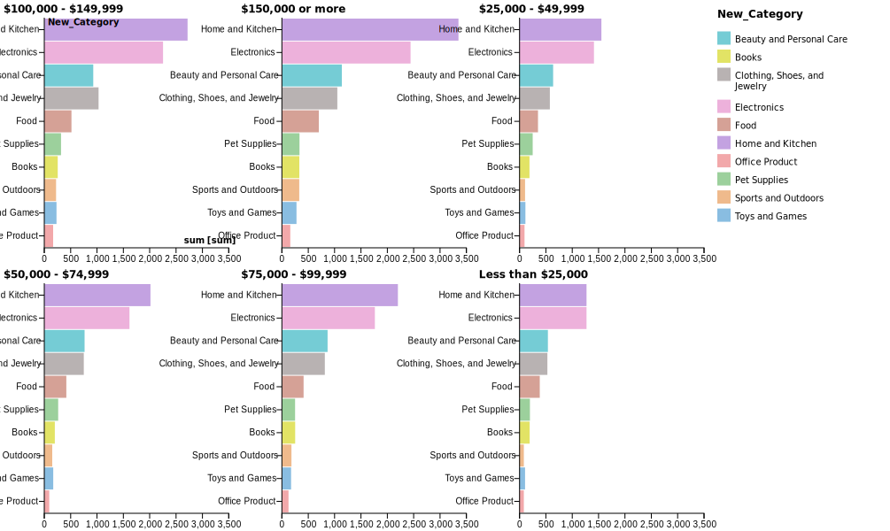

California's Zero-Waste Dream Meets a Landfill Nightmare
California has long been troubled by its trash issues. The state has signed a series of bills aiming for a zero-waste plan in the coming decades. But beyond the millions of tons of waste that go to recycling or composting, landfills remain a long-term problem.
Post-COVID Reality: Income Rises But Pessimism Continues
Real Icome VS Economic Confidence index
Comparing real disposable income and economic confidence index during Trump's last administration and Biden's administration.

What's Standing Between Us and Proof of Bigfoot?
Use mapping tools to visualize the caveats
Why the 2024 Paris Olympics Marked the Triumph of US Female Athletes
Comparing percentages of medals obtained, average medal counts per person, and total numbers.

What are richer people buying online?
An analysis of over a million purchases on Amazon.

Python
Illustrator
HTML
RAWGraphs
BBC Movie Menu
This is an interactive map that is based upon BBC's 100 movie critics' recommendation.
Python BeautifulSoup WebscrapingAbout Me

Candidate @ Columbia Journalism School
Hi there! Welcome to my website. This is the garden of my inner world. I was an anthropologist with a background in statistics before transitioning into journalism, so I explore the human world through a quantitative lens. Interested in visual storytelling and data viz. Feel free to contact me!
Recent Activities.
I just published an interesting chart on real disposable income and economic confidence index. Check it out here: Post-COVID Reality: Income Rises But Pessimism Continues
Right now, I am working on a data story about California's trash crisis. Stay tuned!
The color trend website is down for now. I am working on a new version of it.
(Last updated on 2025-04-06)